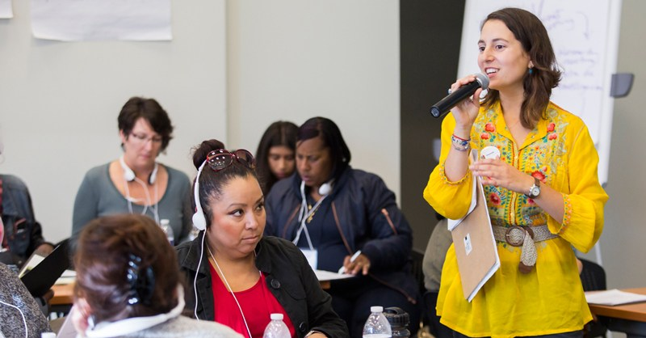

I have an expertise in community organizing, and have been trained diligently in the PICO organizing model (Pacific Institute for Community Organizing). I have organized with majority Latino immigrant communities, as well as African American, Pacific Islander, and White communities around the Bay Area. I have built coalitions and partnerships with faith based organizations and many non-profit and government agencies. I have also worked on electoral campaigns, managing volunteers and both in person and digital canvassing strategy. I consult and train on strategy, campaign development, and the basic skills and building blocks of organizing, such as one to one relational meetings, research meetings, and public actions.
I taught middle school and gained a Master’s in Urban Education with a concentration on Policy and Administration. I have deep experience working with the public school system and focusing on a stakeholder group often left out, families. I consult and train on family and community engagement strategies in the movement for increased education justice.
